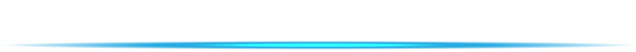

📘 Day 01 Lecture Practices
- 💻 Calling Static Methods Coding Practice
- 💻 Calling Non-Static Methods Coding Practice
- 💻 Handling Return Values Coding Practice
- 💻 Arguments Coding Practice
- 💻 Method Declaration Coding Practice
- 💻 Method Definition Coding Practice
- 💻 Method Calling Coding Practice
💻 Calling Static Methods Coding Practice
🧩 part A-1.0: calling methods on the Console class to print messages.
- Open
Lectures.cpp. - Add code in case 1 of the switch to call
Console::WriteandConsole::WriteLine. - Print several lines. Experiment with changing the colors.
💻 Calling Non-Static Methods Coding Practice
- 🧩 part A-1.1: move player right to spot.
- open
Day1.cpp - find the comment
Part A-1.1in methodPartA_1_1() - follow the instructions to complete the task
- open
- 🧩 part A-1.2: move player down to spot.
- open
Day1.cpp - find the comment
Part A-1.2in methodPartA_1_2() - follow the instructions to complete the task
- open
- 🧩 part A-1.3: move player to a predefined Target spot
- open
Day1.cpp - find the comment
Part A-1.3in methodPartA_1_3() - follow the instructions to complete the task
- open
💻 Handling Return Values Coding Practice
🧩 part A-1.4: Getting return values
Ask the user to enter their name. Print the name.
- Open
Lectures.cppand find the commentpart A-1.4 - Add code in the case to call
Input::GetString. - Store the result in a string variable.
- Print the name that the user enters.
Open the Input.h file (look in Misc/Input in Solution Explorer) to see how the GetString is declared.
💻 Arguments Coding Practice
🧩 part A-1.5: passing arguments
Ask the user for their age. A minimum age would be 0 and a maximum age would be 120.
- Open
Lectures.cppand find the commentpart A-1.5 - Add code in the case to call
Input::GetInteger. - Store the result in an int variable.
- Print the age that the user enters.
Open the Input.h file (look in Misc/Input in Solution Explorer) to see how the GetInteger is declared.
💻 Method Declaration Coding Practice
🧩 Part A-2.1: method declaration
- Find the comment in the
Day1.hfile for Part A-2.1 - Add a method DECLARATION for a method called
CreateTargets_PartA_2.- The declaration should go in the
Day1.hfile. - The method should have 2 int parameters:
mapSizeandcolorRange. - The method should return a vector that holds
Target.
- The declaration should go in the
💻 Method Definition Coding Practice
🧩 Part A-2.2: method definition
- Find the comment in the
Day1.cppfile for Part A-2.2 - Add a method called
CreateTargets_PartA_2.- The definition should go in the
Day1.cppfile. - The method should create a vector of 10
Targetobjects.- Use
rand() % mapSizeto pick the random position (row and col) for each target.
- Use
- Return the vector.
- The definition should go in the
💻 Method Calling Coding Practice
🧩 Part A-2.3: calling the method
- Find the comment in the
Day1.cppfile for Part A-2.3- Call
CreateTargets_PartA_2in thePartA_2()method.- Before the loop call
CreateTargets_PartA_2and store the returned vector into thetargetsvariable.
- Before the loop call
- Call

🧠 Lecture Practices
Here are the lecture Practices...
🔍 Lecture Quizzes
Here are the lecture quizzes...